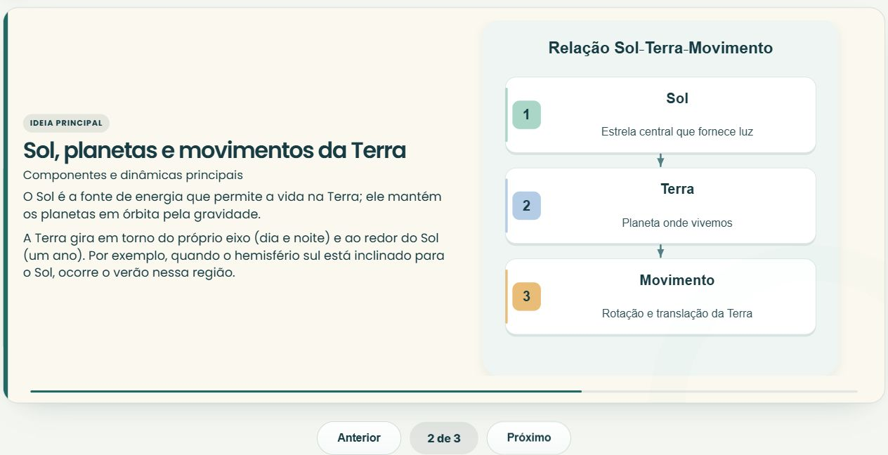
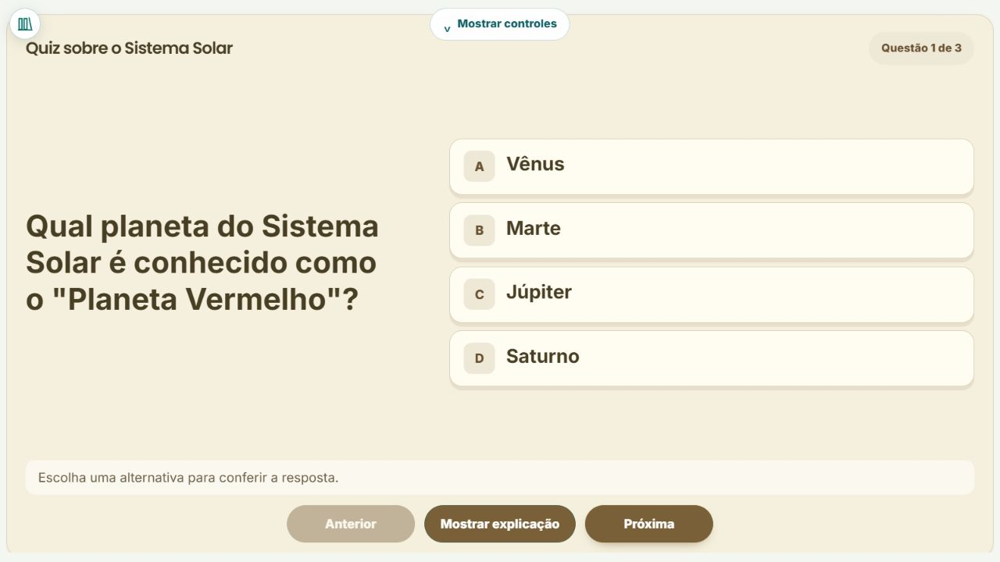
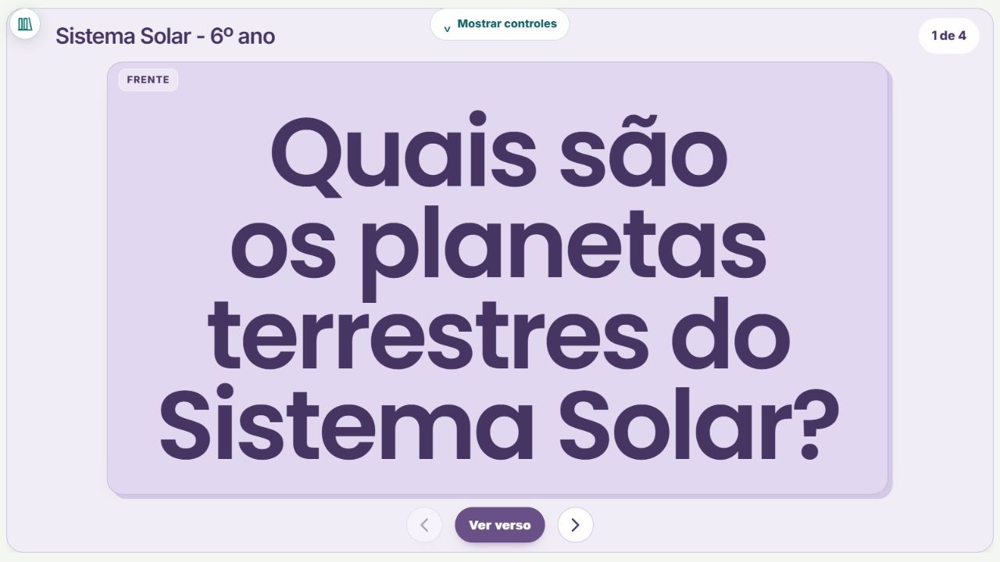
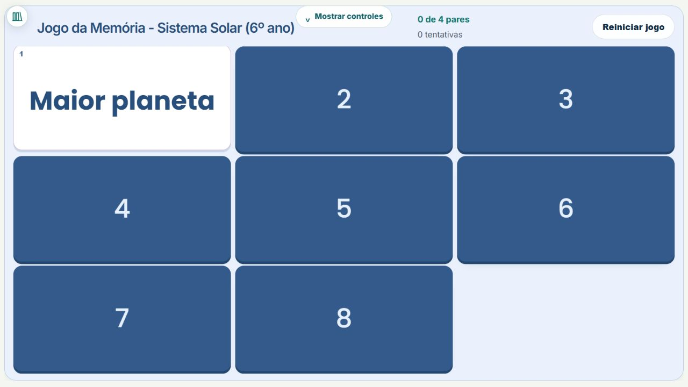
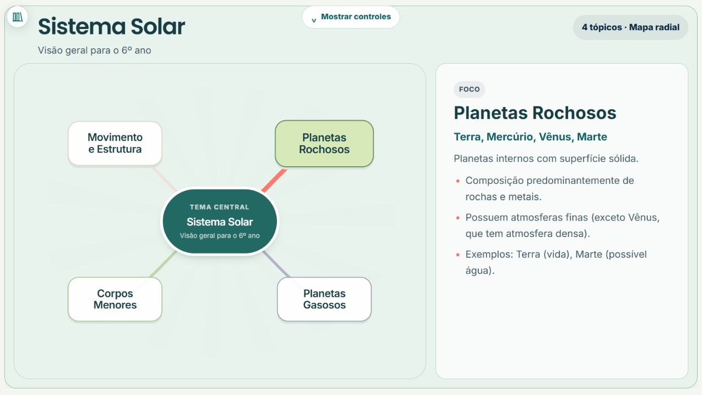
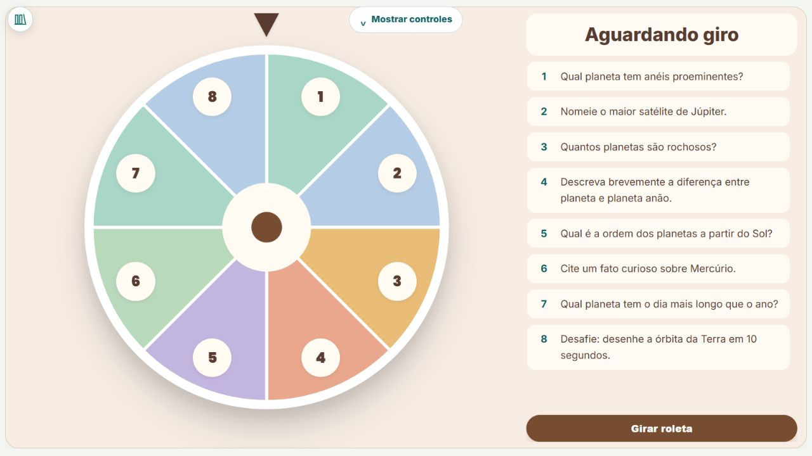
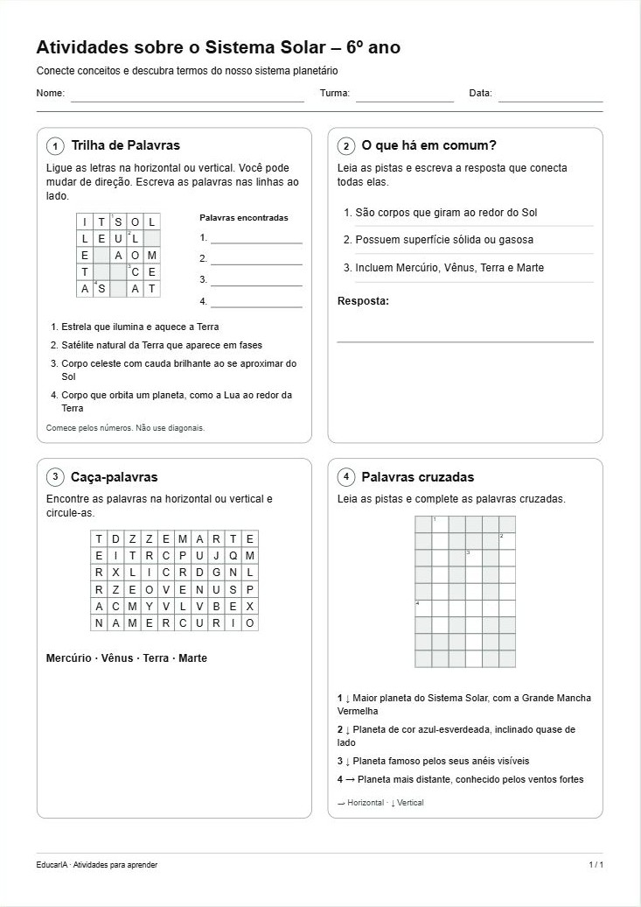

Transforme a sua aula em poucos minutos.
Slides, quizzes, jogos e folhas de atividades a partir de um tema ou arquivo. Crie com IA, dê seu toque e leve para a sala de aula.
Para apresentar ou imprimir · Você revisa tudo antes de usar.


Ampliar exemploDê outro ritmo
à sua aula.
O mesmo tema, diferentes experiências.
Veja como cada formato fica na prática.
Uma explicação
que dá vontade
de acompanhar.
Organize ideias e exemplos em uma sequência visual que você pode editar.
Tema usadoSistema Solar · 6º ano
Uma pergunta.
A turma inteira
pensando.
Apresente as perguntas e descubra as respostas junto com a turma.
Tema usadoSistema Solar · 6º ano


Ampliar exemploA curiosidade
vem na frente.
A descoberta, atrás.
Relacione perguntas e respostas, termos e conceitos. Você escolhe o que vai em cada lado.
Tema usadoSistema Solar · 6º ano


Ampliar exemploConectar ideias
também pode
ser um jogo.
Convide a turma a encontrar os pares e relacionar palavras e conceitos.
Tema usadoSistema Solar · 6º ano


Ampliar exemploAs ideias
ganham novas
conexões.
Explore os tópicos do mapa e as explicações de cada parte do conteúdo.
Tema usadoSistema Solar · 6º ano


Ampliar exemploUm giro.
Uma surpresa.
Uma nova conversa.
Sorteie temas, desafios ou participantes para dar movimento à aula.
Tema usadoSistema Solar · 6º ano


Ampliar exemploE muitas outras.
- Caça-palavras
- Palavras cruzadas
- Debate guiado
- Forca
- Ligar pontos
A criatividade também
vai para o papel.
Escolha os exercícios e indique o tema. A IA prepara a folha, você revisa e imprime para a turma.
- Combine atividades na mesma folha
- Ajuste o tamanho das letras e dos jogos
- Imprima o gabarito separado


Ver a folha de pertoAtividades diferentes.
Uma aula que flui.
Reúna os materiais que você criou, escolha a ordem e conduza tudo em uma apresentação contínua.
Montar minha sequência →- 01SLIDESExplore o Sistema Solar
- 02QUIZO que descobrimos?
- 03DEBATE GUIADOViver em outro planeta?
Da ideia à aula
em poucas etapas.
- 01
Conte sua ideia
Digite seu pedido ou envie um arquivo. Escolha a atividade e o público.
- 02
Dê seu toque
A IA prepara um rascunho. Revise o conteúdo e faça os ajustes que quiser.
- 03
Leve para a turma
Organize seus materiais por turma. Apresente na TV ou prepare uma folha para imprimir.
Primeiro acesso? Comece criando sua turma. O guia rápido acompanha você.
Sua próxima aula pode
começar com uma ideia.
Crie sua conta, explore as ferramentas e ajude a construir o EducarIA nesta fase beta.
Gerações sujeitas à disponibilidade compartilhada.